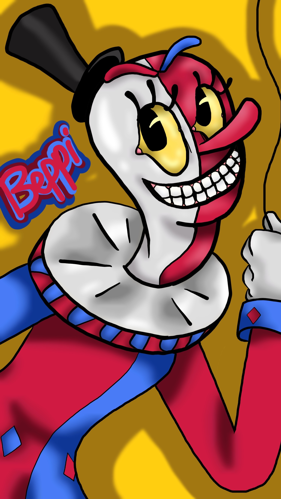

.jpg)
Plot
Cuphead is a run and gun indie game, revolving around two brothers who've found themselves in a life or death situation because of their greed. It was released in September of 2017, and has already taken gamers's attention with its 1930's cartoon style, bright colors, and overall amazing soundtrack and plot.
The plot is two brothers, Cuphead and Mugman, had run off playing one day and found themselves at the Devil's Casino where they go on a winning streak at the craps table. Eventually, they catch the eye of the Devil himself and he makes a deal with them: If they win, Cuphead and Mugman get all of the Devil's riches. If they lose however, the Devil gets their soul. They roll and get snake eyes, successfully losing their souls to the Devil. They beg him relentlessly until the Devil agrees to let their souls go if they can collect the soul contracts of all runaway debtors in 24 hours. The game follows the two brothers as they fight debtors (bosses) using finger guns.
Worlds
There are three major themed worlds in the game, aside from the cave where the Devil's Casino resides.
- Inkwell Isle 1 (forest theme)
- Inkwell Isle 2 (carnival theme)
- Inkwell Isle 3 (lively city theme)
Bosses
Each boss is a unique character that seems harder than the last one you played. They are stated (in order recommended) below:
- Inkwell Isle 1
- Root Pack
- Goopey Le Grande
- Hildaberg
- Ribby and Croaks
- Cagney Carnation
- Inkwell Isle 2
- Baroness Von Bon Bon
- Beppi the Clown
- Djimmi the Great
- Wally Warbles
- Grim Matchstick
- Inkwell Isle 3
- Briney Beard
- Rumour Honeybottoms
- Cala Maria
- Sally Stageplay
- Werner Werman
- Dr Kahl's Robot
- Phantom Express
- Inkwell Hell
- King Dice
- The Devil (choice boss)